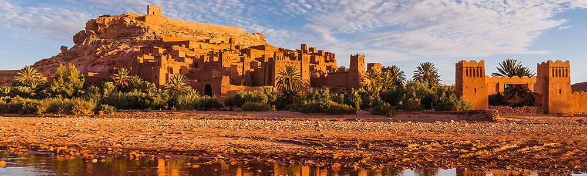

Six mille ans d'histoire
Quelque part près d’Asilah, une route difficile conduit à l’aride décor, où sont plantés plus de cent cinquante menhirs, autour d’un tumulus. Bien peu de touristes s’y aventurent. C’est pourtant là que vécurent les premiers habitants connus du Maroc, il y a quelque six mille ans.
En savoir plusDes plages somptueuses
Certaines sont des spots de surf incontournables, d’autres de petits paradis à l’abri du tourisme de masse.
En savoir plusUne cuisine riche en saveurs et parfums
La cuisine marocaine traditionnelle est extrêmement riche et occupe une place importante dans le classement international des meilleures gastronomies au monde.
En savoir plusDes villes pleines d'histoire et de vie
La capitale administrative et politique du Maroc est Rabat. La capitale économique et la plus grande ville du pays est Casablanca. Les sept plus grandes villes du Maroc, selon le recensement général de la population 2014, sont dans l'ordre : Casablanca, Fès, Tanger, Marrakech, Salé, Meknès et Rabat.
En savoir plus